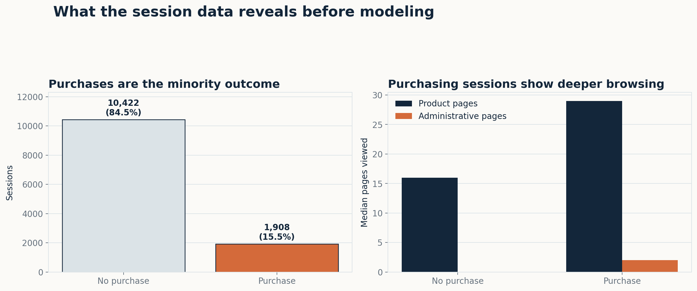
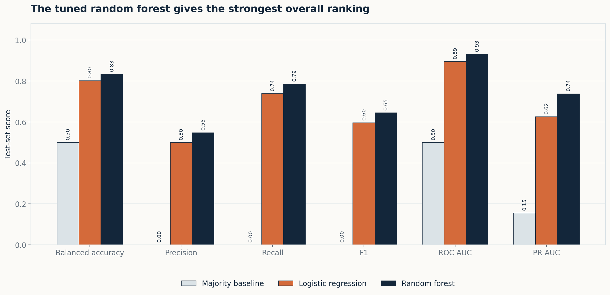
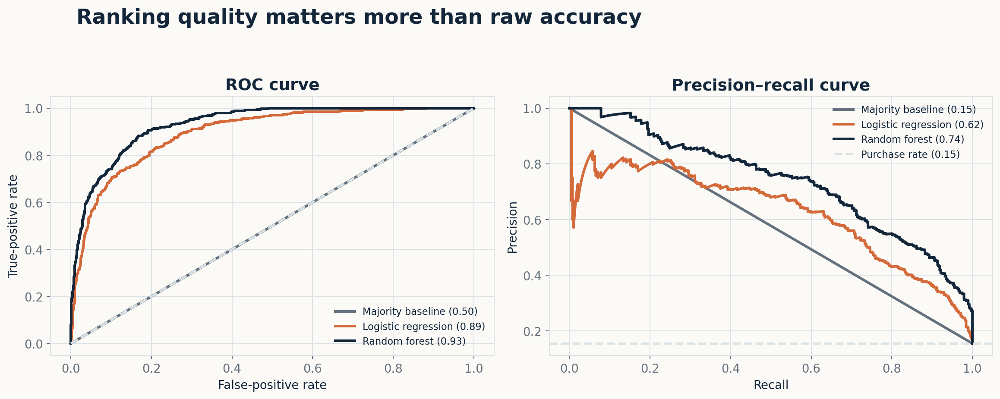
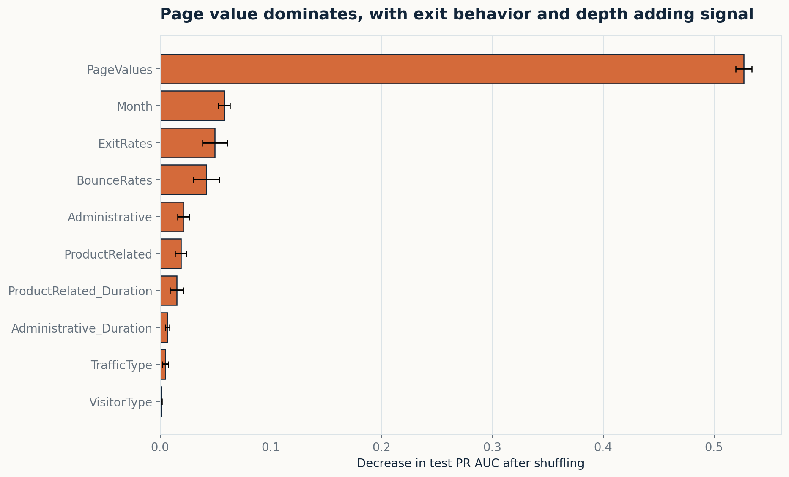
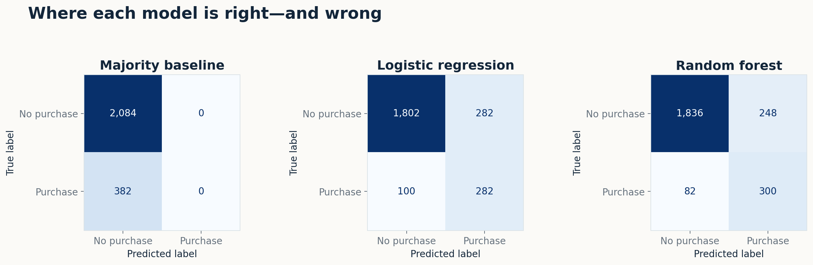

Accuracy hides failure
A model that predicts “no purchase” every time is 84.5% accurate and identifies zero purchasers.
Project 2 · Supervised machine learning
A leakage-aware comparison of logistic regression and random forest models for an e-commerce team deciding when—and when not—to intervene.
Decision brief
The tuned random forest found 300 of 382 purchasing sessions in the untouched test set while producing 248 false alarms. Its 0.74 precision–recall AUC is much more informative than its 86.6% accuracy because only 15.5% of sessions end in a purchase. For a marketing or product team, the model is most useful as a prioritization signal for low-risk actions such as help prompts or usability testing.
A model that predicts “no purchase” every time is 84.5% accurate and identifies zero purchasers.
Removing PageValues drops PR AUC from 0.74 to 0.34, making feature timing a deployment requirement.
False positives can create intrusive targeting; false negatives can miss a shopper who needs support.
01
Problem & motivation
The research question is: Can a customer’s browsing behavior predict whether the session will end in a purchase? The target is Revenue, a binary label, so this is a supervised classification problem. The business value is not simply “predicting the customer.” It is helping an e-commerce product or marketing team prioritize session support, identify friction, and test less disruptive interventions.
Prior work treats purchase-intention prediction as a real-time classification problem using session and visitor information. Researchers have compared neural networks, support vector machines, random forests, and other classifiers, often with resampling to address class imbalance (Sakar et al., 2019; Baati & Mohsil, 2020). This project uses simpler, interpretable benchmarks and evaluates them with metrics that reflect the minority purchase class.
02
Research & context
Sakar et al. (2019) introduced the underlying session dataset and modeled both purchase intention and site-abandonment likelihood. Baati and Mohsil (2020) later compared naïve Bayes, C4.5, and random forest approaches using session and visitor information. Both studies support the premise that clickstream features can help rank purchase intent, but they also raise an important operational question: are all inputs truly available at the moment the prediction is made?
That issue is central here because PageValues is based on the average value of pages visited before a transaction. It is not the target itself, but it is strongly connected to transactional behavior. I therefore report a sensitivity model without PageValues rather than presenting the higher score as deployment-ready.
03
Data
The UCI Online Shoppers Purchasing Intention Dataset contains sessions collected across one year. Each row represents a different user session. Ten numeric measures describe page counts, time on page categories, bounce rate, exit rate, page value, and proximity to a special day. Seven inputs are handled as categorical: month, operating system, browser, region, traffic type, visitor type, and weekend. Revenue records whether the session ended in a purchase (Sakar & Kastro, 2018).
Source note. The data is licensed CC BY 4.0. The repository includes the original CSV with attribution and the complete analysis script.
04
Cleaning & preprocessing
Revenue to Boolean. Numeric-looking codes such as browser, region, and traffic type were treated as categories rather than quantities.05
Data understanding
Only 15.5% of sessions ended in a purchase. The median purchasing session viewed 29 product-related pages versus 16 for a non-purchasing session and 2 administrative pages versus 0. Durations and rate features are skewed, so medians are more representative than means for this early comparison. These patterns justify keeping depth, duration, bounce, exit, timing, and visitor-context features for modeling, while the sensitivity analysis separately tests the outsized influence of PageValues.

06
Train/test strategy
I used an 80/20 stratified split with random_state=42: 9,864 sessions for training and 2,466 for testing. Stratification preserved the purchase rate in both partitions. Preprocessing, class weighting, and hyperparameter selection were contained in scikit-learn pipelines. Logistic-regression regularization and random-forest depth, feature sampling, and leaf size were selected with five-fold stratified cross-validation on the training partition, optimizing average precision. The test set was used once for the final report.
07
Baseline
The majority-class baseline always predicts “no purchase.” It reaches 84.5% accuracy because non-purchases dominate the dataset, but its purchase precision, recall, and F1 are all 0. Its ROC AUC is 0.50 and PR AUC is 0.15. A useful model must beat this baseline on minority-class performance, not merely on accuracy.
08
Models & evaluation
Logistic regression provides an interpretable linear benchmark. Random forest captures nonlinear thresholds and interactions among browsing signals. Both used balanced class weights. I emphasize PR AUC because it focuses on the positive class under imbalance; ROC AUC measures ranking across thresholds, while recall and precision show the trade-off at the default 0.50 threshold.
| Model | Balanced accuracy | Precision | Recall | F1 | ROC AUC | PR AUC |
|---|---|---|---|---|---|---|
| Majority baseline | 0.50 | 0.00 | 0.00 | 0.00 | 0.50 | 0.15 |
| Logistic regression | 0.80 | 0.50 | 0.74 | 0.60 | 0.89 | 0.63 |
| Random forest | 0.83 | 0.55 | 0.79 | 0.65 | 0.93 | 0.74 |


09
Interpretation & error analysis
Permutation importance measures how much test PR AUC falls after one raw feature is shuffled. PageValues is by far the strongest feature, followed by month, exit rate, bounce rate, and page-depth measures. Importance indicates predictive dependence, not causation. It can also understate correlated features because another variable can preserve some of the same signal.

Sensitivity check
That 0.40 decline does not prove leakage, but it shows that the recommended use depends on the field’s exact definition and availability at prediction time. A production team should log a timestamped snapshot and verify that every feature exists before the intervention.

Recall is similar for new visitors (76.4%) and returning visitors (79.0%), but precision differs: 84.0% for new visitors versus 49.4% for returning visitors in this test split. That gap may reflect different base rates and session behavior—not necessarily unfair treatment—but it should be monitored before a shared threshold is deployed. The “Other” group has only 11 test sessions, so its perfect score is too unstable to interpret.
10
Ethics, limitations & use
Recommended next step. Run a prospective test with timestamped features, calibrated probabilities, a pre-registered intervention threshold, and outcome monitoring by visitor type. The model should be retrained or retired if ranking quality or subgroup error rates deteriorate.
Sources, code & disclosure
AI disclosure: OpenAI Codex (GPT-5, October 2026) assisted with analysis scaffolding, code review, visualization styling, and drafting this case study. I reviewed the requirements, results, claims, and citations and remain responsible for the final work.